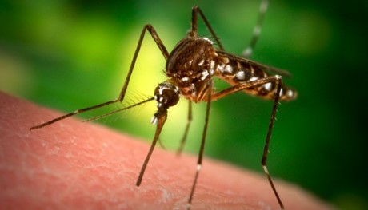
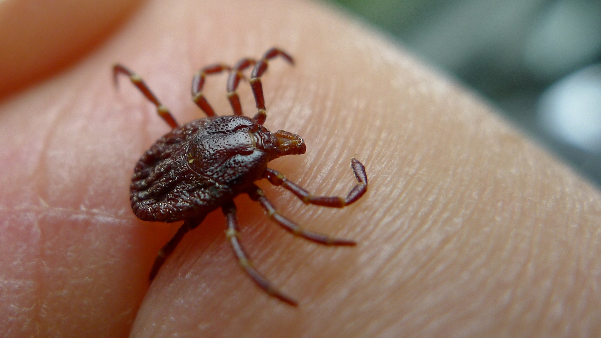
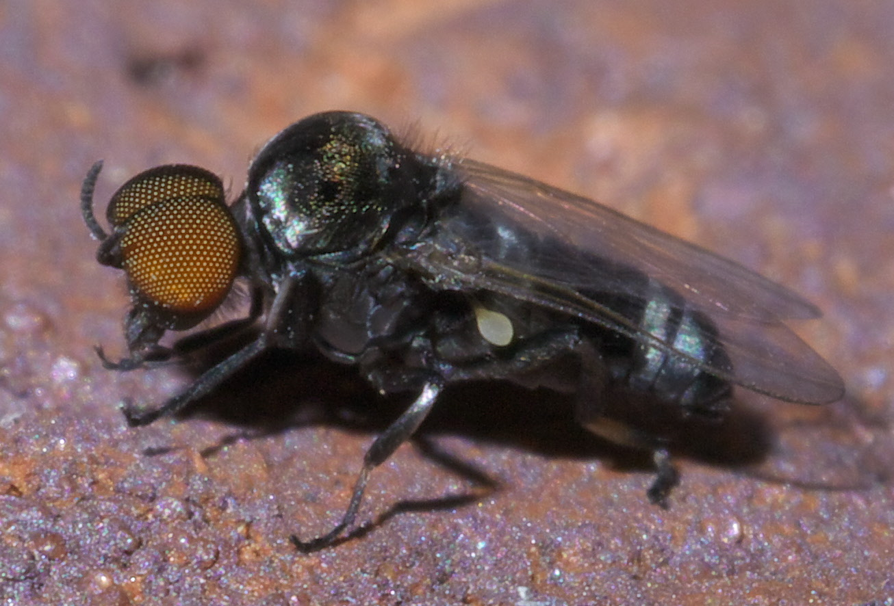
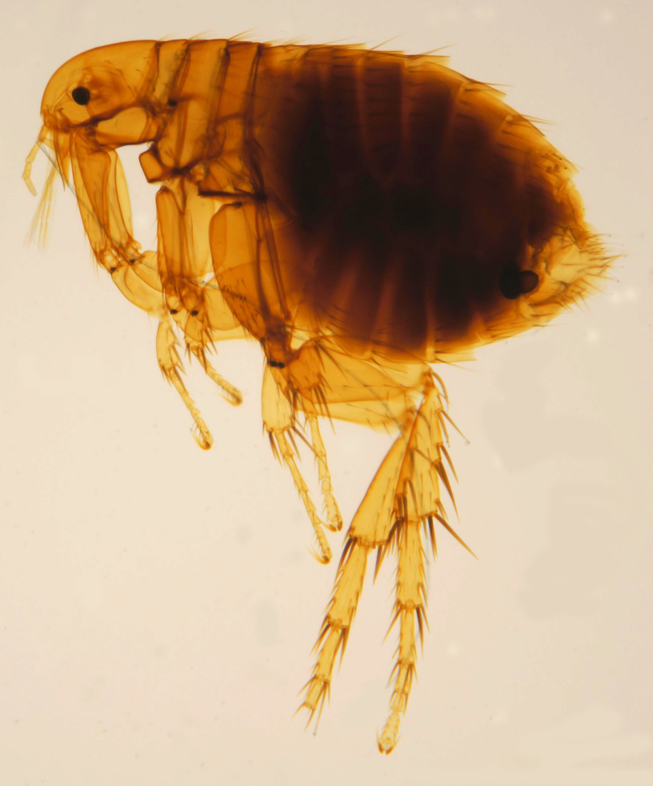
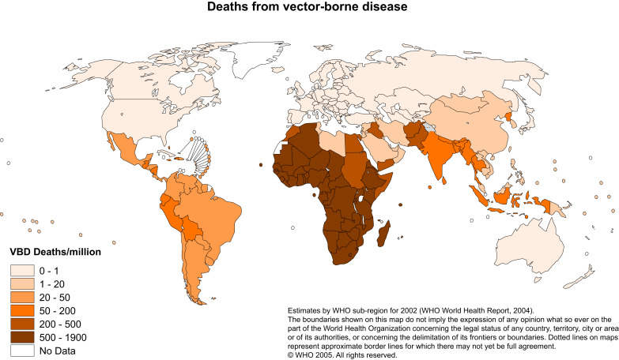

| Vector | Disease |
|---|---|
| Mosquito - Anopheles | Malaria, Lymphatic filariasis |
| Mosquito - Aedes | Zika, Dengue, Lymphatic filariasis |
| Mosquito - Culex | West Nile fever, Japanese encephalitis, Lymphatic filariasis |
| Blackflies | Onchocerciasis |
Building vector-borne disease models
SPARKLE short course ‘Mathematical Modelling of Infectious Diseases’
Presenter: Trish Campbell, The University of Melbourne at The Peter Doherty Institute for Infection and Immunity
Summary
This is an interactive session to introduce the concepts of modelling vector-borne diseases. The motivation for modelling and differences compared to modelling diseases spread by direct transmission will be covered. We will write down a basic model and derive the expression for \(\mathcal{R}_0\).
This session is divided into three parts:
Part 1 covers:
- Motivation for vector-borne disease models
- Examples of vector-borne diseases
- Different transmission cycles
Part 2 covers:
- The mechanics of vector-borne disease transmission
- Force of infection for vector-borne diseases
- Other vector-borne disease modelling considerations
Part 3 covers:
- Drawing a model schematic
- Writing the differential equations
- Calculating the basic reproduction number
We recommend saving your text at the end of each part by printing the file.
Part 1: Motivation and examples
What are vector-borne diseases?
Unlike diseases that spread directly from person to person, vector-borne diseases are those diseases in which the spread of an infectious pathogen occurs via a vector — a living organism that is typically a bloodsucking insect, such as a mosquito. Once a vector becomes infectious, they typically remain so for the rest of their life. They also are typically not adversely affected by the infection. Examples of vectors include (left to right) mosquitoes, ticks, blackflies and fleas:
   
Examples of vector-borne diseases and vectors that spread them
There are many different types of vector. While some diseases, such as malaria, are exclusively spread by a single vector genus, others, such as lymphatic filariasis, can be transmitted by multiple species. Similarly, some vectors are able to spread multiple diseases.
Source: https://www.who.int/news-room/fact-sheets/detail/vector-borne-diseases
1.1 Do you know which of these vector-borne diseases is relevant to your region? Are there any others?
How do vector-borne diseases spread?
Below are diagrams showing the transmission cycles for two vector-borne diseases: Onchocerciasis (top) and West Nile fever, caused by infection with West Nile virus (bottom).
1.2 What type of vector is responsible for the spread of onchocerciasis?
1.3 What type of vector is responsible for the spread of West Nile virus?
1.4 What is the main difference you notice between these two transmission cycles?
We can divide vector-borne diseases into two categories, those that spread by a human-vector-human cycle (e.g. malaria, dengue, zika, onchocerciasis) and those that involve a non-human host (e.g. West Nile virus, Japanese encephalitis). In this session, we will only be working with diseases that spread by a human-vector-human cycle.
Burden of disease
Diseases spread by vectors account for almost one-fifth of all infectious diseases and are responsible for more than 700,000 deaths annually. Much of this disease burden is due to malaria and dengue infections, estimated to cause more than 440,000 deaths per year. The map below displays the distribution of deaths due to vector-borne diseases, estimated by the World Health Organization in 2002. While Africa has the highest burden, there is substantial burden in the Asia Pacific region. As global temperatures increase, the global distribution of vectors is changing, which may allow the spread of vector-borne diseases into new areas.

How can modelling help?
1.5 What are some ways that modelling might be used to help reduce the burden of vector-borne infectious diseases?
Part 1: Solutions
The solutions tab contains suggested answers for Part 1. Only click on it if you have tried to complete the exercises yourself and need some help
What are vector-borne diseases?
Unlike diseases that spread directly from person to person, vector-borne diseases are those diseases in which the spread of an infectious pathogen occurs via a vector — a living organism such as a mosquito. Examples of vectors include (left to right) mosquitoes, ticks, blackflies and fleas:
Examples of vector-borne diseases and vectors that spread them
There are many different types of vector. While some diseases, such as malaria, are exclusively spread by a single vector genus, others, such as lymphatic filariasis, can be transmitted by multiple species. Similarly, some vectors are able to spread multiple diseases.
| Vector | Disease |
|---|---|
| Mosquito - Anopheles | Malaria, Lymphatic filariasis |
| Mosquito - Aedes | Zika, Dengue, Lymphatic filariasis |
| Mosquito - Culex | West Nile fever, Japanese encephalitis, Lymphatic filariasis |
| Blackflies | Onchocerciasis |
Source: https://www.who.int/news-room/fact-sheets/detail/vector-borne-diseases
1.1 Do you know which of these vector-borne diseases is important to your country? Are there any others?
Others might include leishmaniasis, ricksettial diseases
How do vector-borne diseases spread?
Below are diagrams showing the transmission cycles for two vector-borne diseases: Onchocerciasis (top) and West Nile fever, caused by infection with West Nile virus (bottom).
1.2 What type of vector is responsible for the spread of onchocerciasis?
Blackfly
1.3 What type of vector is responsible for the spread of West Nile virus?
Mosquito
1.4 What is the main difference you notice between these two transmission cycles?
WNV includes non-human hosts
We can divide vector-borne diseases into two categories, those that spread by a human-vector-human cycle (e.g. malaria, dengue, zika, onchocerciasis) and those that involve a non-human host (e.g. West Nile virus, Japanese encephalitis). In this session, we will only be working with diseases that spread by a human-vector-human cycle.
Burden of disease
Diseases spread by vectors account for almost one-fifth of all infectious diseases and are responsible for more than 700,000 deaths annually. Much of this disease burden is due to malaria and dengue infections, estimated to cause more than 440,000 deaths per year. The map below displays the distribution of deaths due to vector-borne diseases, estimated by the World Health Organization in 2002. While Africa has the highest burden, there is substantial burden in the Asia Pacific region. As global temperatures increase, the global distribution of vectors is changing, which may allow the spread of vector-borne diseases into new areas.
How can modelling help?
1.5 What are some ways that modelling might be used to help reduce the burden of vector-borne infectious diseases?
Forecast likely cases in order to scale up necessary treatments; help understand the factors that are important to spread; investigate the types of interventions that might help to control transmission; inform decisions of policy-makers
Part 2: Elements of vector-borne disease models
Purpose
In this part of the session, we will consider the mechanistic process by which vector-borne diseases spread and consider the other elements that are needed in vector-borne disease models.
Simplified spread of a mosquito-borne disease
While there are many different types of vectors, in this and the following part we will cover modelling of diseases that are spread by mosquitoes. Female mosquitoes bite humans to obtain protein from blood for their developing eggs. These bites can transmit infection from mosquito to human or from human to mosquito. The following diagram outlines a simple transmission cycle of a mosquito-borne disease:
The steps involved in transmission, as indicated on the diagram above are:
- A susceptible mosquito bites an infectious human.
- Infection is successfully transmitted to the mosquito. The pathogen multiplies within the mosquito. The mosquito is now infectious, and capable of transmitting disease.
- The infectious mosquito bites a susceptible human.
- Infection is successfully transmitted to the human. The pathogen multiplies within the human. The human is now infectious, and capable of transmitting disease.
You might notice that in our diagram above both humans and mosquitoes are infectious immediately upon being infected. In reality, it takes time for the infectious load to build in a host before they are capable of transmitting infection. We make this assumption here to simplify the explanation of the transmission process.
Recovery from infection
For the model that we are building in this session, we will assume that:
- Infectious humans recover at a rate that is the reciprocal of their infectious period.
- Once an infectious human recovers, they are immune for the remainder of their life.
- Mosquitoes, once infected, remain infectious for the rest of their life.
2.1 Based on the diagram and assumptions above, what compartments would be required to model the human population? Use the subscript H to indicate that these are human compartments.
2.2 Based on the diagram and assumptions above, what compartments would be required to model the mosquito population? Use the subscript M to indicate that these are mosquito compartments.
Human and mosquito populations interact through bites
The feature that makes vector-borne disease models different to models for diseases spread by direct contact is that the human and mosquito populations interact through bites. Note only adult female mosquitoes bite. We start with the assumption that each mosquito makes a fixed number of bites per unit time, and we define this as \(b\). We further assume that those bites are uniformly spread across the human population, \(N_H\). It follows that the rate at which a specific human is bitten by a specific mosquito, which we define as \(r\), can be calculated as:
\[r=\frac{b}{N_H}\]
This is the number of bites a single human receives from a single mosquito per unit time, and is analogous to ‘contact’ in directly-transmitted disease models.
2.3 What happens to the rate \(r\) as the human population increases? What do you think might be the implication for transmission?
Probability of successful transmission
Similar to contacts in the case of directly transmitted (human to human) infections, not all mosquito bites will be of sufficient intensity to transmit infection. For each bite, we assign a probability that the bite is of sufficient intensity to transmit infection (if one host is susceptible and the other infectious), using the following notation:
- \(T_{HM}\) is the probability that an infectious mosquito biting a human transmits infection to the human
- \(T_{MH}\) is the probability that an infectious human being bitten by a susceptible mosquito transmits infection to the mosquito
We refer to this as the probability of successful transmission.
2.4 Write the expression for the number of bites a single human receives from a single mosquito per unit time that are capable of transmitting infection from mosquito to human.
2.5 Write the expression for the number of bites a single human receives from a single mosquito per unit time that are capable of transmitting infection from human to mosquito.
Force of infection on humans \((λ_H)\) and on mosquitoes \((λ_M)\)
The expressions in 2.4 and 2.5 are for the rate of ‘successful’ bites between a single susceptible human and a single infectious mosquito. The force of infection on humans, \(λ_H\), is the rate at which a susceptible human acquires infection, noting that infection can be acquired from any infectious mosquito.
2.6 Write the expression for the force of infection on humans, \(λ_H\).
Similarly the force of infection on mosquitoes, \(λ_M\), is the rate at which a susceptible mosquito acquires infection. A mosquito can acquire infection from any infectious human.
2.7 Write the expression for the force of infection on mosquitoes, \(λ_M\).
New infections per unit time
The force of infection (on humans or mosquitoes) is the rate at which infection is acquired in a single susceptible host. To calculate the rate that new infections occur in the whole human or mosquito population, we have to multiply the force of infection by the population at risk of being infected.
2.8 Using the equation for the force of infection on humans, \(λ_H\), write the expression for the total number of human infections per unit time.
2.9 Using the equation for the force of infection on mosquitoes, \(λ_M\), write the expression for the total number of mosquito infections per unit time.
Births and deaths
- Typically the demographic processes of mosquitoes (births, deaths) occur on a much shorter time scale than the same processes for humans — mosquitoes may live a few weeks whereas humans live for decades.
- Depending on the time over which the model will be run to answer the research question, it is common for mosquito births and deaths to be included in a model while human births and deaths are omitted.
- To maintain a constant population in a model, we set the birth rates and the death rates to be equal.
- In the model we are building in this session, we will ignore human births and deaths and maintain a constant mosquito population.
- In the model we are building in this session, all new members of the population are born susceptible to the modelled disease.
Other modelling considerations
- Many of the processes affecting the life cycle of mosquitoes are highly climate dependent and so vary seasonally. For the purposes of illustration, we will not include seasonality in our model.
- As we saw when we compared the transmission cycle for onchocerciasis with the transmission cycle of West Nile virus, for some vector-borne diseases vertebrate hosts other than humans are involved. As this adds substantial complexity to the model, in this session we consider only diseases that spread human-vector-human.
- While we have assumed a constant probability across the whole population that a bite will result in transmission, in reality this may not be the case due to population heterogeneity.
- If a disease is transmitted by multiple mosquito species, the lifespans and other important factors may be different, so may need to be explicitly modelled.
Part 2: Solutions
The solutions tab contains solutions for Part 2. Only click on it if you have tried to complete the exercises yourself and need some help
Purpose
In this part of the session, we will consider the mechanistic process by which vector-borne diseases spread and consider the other elements that are needed in vector-borne disease models.
Simplified spread of a mosquito-borne disease
While there are many different types of vectors, in this and the following part we will cover modelling of diseases that are spread by mosquitoes. Female mosquitoes bite humans to obtain protein from blood for their developing eggs. These bites can transmit infection from mosquito to human or from human to mosquito. The following diagram outlines a simple transmission cycle of a mosquito-borne disease:
The steps involved in transmission, as indicated on the diagram above are:
- A susceptible mosquito bites an infectious human.
- Infection is successfully transmitted to the mosquito. The pathogen multiplies within the mosquito. The mosquito is now infectious, and capable of transmitting disease.
- The infectious mosquito bites a susceptible human.
- Infection is successfully transmitted to the human. The pathogen multiplies within the human. The human is now infectious, and capable of transmitting disease.
You might notice that in our diagram above both humans and mosquitoes are infectious immediately upon being infected. In reality, it takes time for the infectious load to build in a host before they are capable of transmitting infection. We make this assumption here to simplify the explanation of the transmission process.
Recovery from infection
For the model that we are building in this session, we will assume that:
- Infectious humans recover at a rate that is the reciprocal of their infectious period.
- Once an infectious human recovers, they are immune for the remainder of their life.
- Mosquitoes, once infected, remain infectious for the rest of their life.
2.1 Based on the diagram and assumptions above, what compartments would be required to model the human population? Use the subscript H to indicate that these are human compartments.
\(S_H, I_H, R_H\)
2.2 Based on the diagram and assumptions above, what compartments would be required to model the mosquito population? Use the subscript M to indicate that these are mosquito compartments.
\(S_M, I_M\)
Human and mosquito populations interact through bites
The feature that makes vector-borne disease models different to models for diseases spread by direct contact is that the human and mosquito populations interact through bites. We start with the assumption that each mosquito makes a fixed number of bites per unit time, and we define this as \(b\). We further assume that those bites are uniformly spread across the human population, \(N_H\). It follows that the rate at which a specific human is bitten by a specific mosquito, which we define as \(r\), can be calculated as:
\[r=\frac{b}{N_H}\]
This is the number of bites a single human receives from a single mosquito per unit time, and is analogous to ‘contact’ in directly-transmitted disease models.
2.3 What happens to the rate \(r\) as the human population increases? What do you think might be the implication for transmission?
It reduces as the same number of bites are spread over more people. This makes it less likely that a human will be bitten the two times necessary in the required timeframe in order to continue transmission (i.e. once to be infected by an infectious mosquito and then by a susceptible mosquito to infect them.
Probability of successful transmission
Similar to contacts in the case of directly transmitted (human to human) infections, not all mosquito bites will be of sufficient intensity to transmit infection. For each bite, we assign a probability that the bite is of sufficient intensity to transmit infection (if one host is susceptible and the other infectious), using the following notation:
- \(T_{HM}\) is the probability that an infectious mosquito biting a human transmits infection to the human
- \(T_{MH}\) is the probability that an infectious human being bitten by a susceptible mosquito transmits infection to the mosquito
We refer to this as the probability of successful transmission.
2.4 Write the expression for the number of bites a single human receives from a single mosquito per unit time that are capable of transmitting infection from mosquito to human.
\(T_{HM} \times \frac{b}{N_H}\)
2.5 Write the expression for the number of bites a single human receives from a single mosquito per unit time that are capable of transmitting infection from human to mosquito.
\(T_{MH} \times \frac{b}{N_H}\)
Force of infection on humans \((λ_H)\) and on mosquitoes \((λ_M)\)
The expressions in 2.4 and 2.5 are for the rate of ‘successful’ bites between a single susceptible human and a single infectious mosquito. The force of infection on humans, \(λ_H\), is the rate at which a susceptible human acquires infection, noting that infection can be acquired from any infectious mosquito.
2.6 Write the expression for the force of infection on humans, \(\lambda_H\).
\(T_{HM} \times \frac{b}{N_H} \times I_M\)
Similarly the force of infection on mosquitoes, \(λ_M\), is the rate at which a susceptible mosquito acquires infection. A mosquito can acquire infection from any infectious human.
2.7 Write the expression for the force of infection on mosquitoes, \(λ_M\).
\(T_{MH} \times \frac{b}{N_H} \times I_H\)
New infections per unit time
The force of infection (on humans or mosquitoes) is the rate at which infection is acquired in a single susceptible host. To calculate the rate that new infections occur in the whole human or mosquito population, we have to multiply the force of infection by the population at risk of being infected.
2.8 Using the equation for the force of infection on humans, \(λ_H\), write the expression for the total number of human infections per unit time.
\(T_{HM} \times \frac{b}{N_H} \times I_M \times S_H\)
2.9 Using the equation for the force of infection on mosquitoes, \(λ_M\), write the expression for the total number of mosquito infections per unit time.
\(T_{MH} \times \frac{b}{N_H} \times I_H \times S_M\)
Births and deaths
- Typically the demographic processes of mosquitoes (births, deaths) occur on a much shorter time scale than the same processes for humans — mosquitoes may live a few weeks whereas humans live for decades.
- Depending on the time over which the model will be run to answer the research question, it is common for mosquito births and deaths to be included in a model while human births and deaths are omitted.
- To maintain a constant population in a model, we set the birth rates and the death rates to be equal.
- In the model we are building in this session, we will ignore human births and deaths and maintain a constant mosquito population.
- In the model we are building in this session, all new members of the population are born susceptible to the modelled disease.
Other modelling considerations
- Many of the processes affecting the life cycle of mosquitoes are highly climate dependent and so vary seasonally. For the purposes of illustration, we will not include seasonality in our model.
- As we saw when we compared the transmission cycle for onchocerciasis with the transmission cycle of West Nile virus, for some vector-borne diseases vertebrate hosts other than humans are involved. As this adds substantial complexity to the model, in this session we consider only diseases that spread human-vector-human.
- While we have assumed a constant probability across the whole population that a bite will result in transmission, in reality this may not be the case due to population heterogeneity. Comparing the force of infection measured in humans to the measured entomological inoculation rate (EIR), which is the average number of infectious bites per human per unit time, can help calibrate models to real data.
Part 3: Writing the model
Model Diagram
Now that we have explored how the human and mosquito populations interact in a vector-borne disease model and made some assumptions around what to include in our first model, we will design an appropriate model structure. Using the model compartments you identified in Part 2, and the inflows and outflows from each compartment required based on the assumptions discussed in Part 2, draw your proposed model structure.
Instructions: 1. You can draw a diagram electronically in a program such as PowerPoint, or you can draw your diagram by hand and take a photo
Make sure you label all compartments as well as the inflows and outflows from each compartment.
Save your diagram in one of the following formats: .jpg, .gif, .png
Upload your diagram using the Browse… button below
If you prefer, you can describe your model in words in the space below
NB: You can replace a file by clicking on the file name and selecting a file with a different name.
Upload your image
Alternatively, describe your model structure here
Model equations
3.1 For your model, write in words the inflows and outflows from each compartment.
3.2 Convert your description of the model inflows and outflows into the differential equations for your model.
3.3 Write the equations for the size of each population in your model.
Basic reproduction number
The basic reproduction number, \(\mathcal{R}_0\), for a vector-borne disease is the number of secondary infections of the same type (i.e. vector or human) generated by a single infectious vector or human in a totally susceptible population. Let’s start with a single infectious mosquito.
We firstly start with the expected number of humans (in a totally susceptible population) infected by this mosquito over the duration of their infectious period.
3.4 Write down this expression using the information you have developed in Parts 2 and 3 (i.e. number of new infections and the duration of the infectious period). We will denote this as \(\mathcal{R}_{HM}\).
Next we consider the expected number of mosquitoes (in a totally susceptible population) infected by a single human over the duration of their infectious period.
3.5 Write down this expression using the information you have developed in Parts 2 and 3 (i.e. number of new infections and the duration of the infectious period). We will denote this as \(\mathcal{R}_{MH}\).
Since a single mosquito infects \(\mathcal{R}_{HM}\) humans, and each of these humans infects \(\mathcal{R}_{MH}\) mosquitoes, the number of secondary infections a mosquito generates in mosquitoes is the product of \(\mathcal{R}_{HM}\) and \(\mathcal{R}_{MH}\).
3.6 Write down this expression, cancelling terms where possible to simplify the expression.
3.7 What happens to \(\mathcal{R}_0\) as the number of mosquitoes increases? Why?
3.8 What happens to \(\mathcal{R}_0\) as the number of humans increases? Why?
3.9 Depending on the season, mosquitoes may have a reduced life expectancy. What happens to \(\mathcal{R}_0\) as the life expectancy of mosquitoes reduces? Why?
Part 3: Solutions
The solutions tab contains solutions for Part 3. Only click on it if you have tried to complete the exercises yourself and need some help
Model Diagram
Now that we have explored how the human and mosquito populations interact in a vector-borne disease model and made some assumptions around what to include in our first model, we will design an appropriate model structure. Using the model compartments you identified in Part 2, and the inflows and outflows from each compartment required based on the assumptions discussed in Part 2, draw your proposed model structure.
Instructions:
You can draw a diagram electronically in a program such as PowerPoint, or you can draw your diagram by hand and take a photo
Make sure you label all compartments as well as the inflows and outflows from each compartment.
Save your diagram in one of the following formats: .jpg, .gif, .png
Upload your diagram using the Browse… button below
If you prefer, you can describe your model in words in the space below
NB: You can replace a file by clicking on the file name and selecting a file with a different name.
Upload your image
Alternatively, describe your model structure here
SIR for humans, SI for mosquitoes. Force of infection on humans from mosquitoes and Force of infection on mosquitoes from humans.
Model equations
3.1 For your model, write in words the inflows and outflows from each compartment.
Change in \(S_H=-\) new infections in humans
Change in \(I_H=\) new infections in humans \(-\) recoveries in humans
Change in \(R_H=\) recoveries in humans
Change in \(S_M=-\) new infections in mosquitoes + mosquitoes born \(-\) susceptible mosquitoes died
Change in \(I_M=\) new infections in mosquitoes \(-\) infectious mosquitoes died
3.2 Convert your description of the model inflows and outflows into the differential equations for your model.
\(\frac{dS_H}{dt} = - T_{HM} \times \frac{b}{N_H} \times I_M \times S_H\)
\(\frac{dI_H}{dt} = T_{HM} \times \frac{b}{N_H} \times I_M \times S_H - \gamma I_H\)
\(\frac{dR_H}{dt} = \gamma I_H\)
where \(\gamma\) is the reciprocal of the duration of infectiousness
\(\frac{dS_M}{dt} = - T_{MH} \times \frac{b}{N_H} \times I_H \times S_M + \mu N_M - \mu S_M\)
\(\frac{dI_M}{dt} = T_{MH} \times \frac{b}{N_H} \times I_H \times S_M - \mu I_M\)
where \(\mu\) is mosquito birth and death rate
Note
This is a very simplified model of the process.
3.3 Write the equations for the size of each population in your model.
\(N_H = S_H + I_H + R_H\)
\(N_M = S_M + I_M\)
Basic reproduction number
The basic reproduction number, \(\mathcal{R}_0\), for a vector-borne disease is the number of secondary infections of the same type (i.e. vector or human) generated by a single infectious vector or human in a totally susceptible population. Let’s start with a single infectious mosquito.
We firstly start with the expected number of humans (in a totally susceptible population) infected by this mosquito over the duration of their infectious period.
3.4 Write down this expression using the information you have developed in Parts 2 and 3 (i.e. number of new infections and the duration of the infectious period). We will denote this as \(\mathcal{R}_{HM}\).
\(I_M=1, \frac{S_H}{N_H}\approx 1\)
number of new human infections = \(T_{HM} \times \frac{b}{N_H} \times I_M \times S_H\)
duration of the mosquito infectious period = \(\frac{1}{\mu}\)
\(\mathcal{R}_{HM} = T_{HM} \times \frac{b}{N_H} \times I_M \times S_H \times \frac{1}{\mu}\)
\(\mathcal{R}_{HM} = T_{HM} \times b \times I_M \times \frac{S_H}{N_H} \times \frac{1}{\mu}\)
\(\mathcal{R}_{HM} = T_{HM} \times b \times 1 \times 1 \times \frac{1}{\mu}\)
\(\mathcal{R}_{HM} = b \times T_{HM} \times \frac{1}{\mu}\)
Focus question
What do you notice about the average infectious period of the mosquito? Why is it that?
Next we consider the expected number of mosquitoes (in a totally susceptible population) infected by a single human over the duration of their infectious period.
3.5 Write down this expression using the information you have developed in Parts 2 and 3 (i.e. number of new infections and the duration of the infectious period). We will denote this as \(\mathcal{R}_{MH}\).
\(I_H=1, S_M\approx N_M\)
number of new mosquito infections = \(T_{MH} \times \frac{b}{N_H} \times I_H \times S_M\)
average human infectious period = \(\frac{1}{\gamma}\)
\(\mathcal{R}_{MH} = T_{MH} \times \frac{b}{N_H} \times I_H \times S_M \times \frac{1}{\gamma}\)
\(\mathcal{R}_{MH} = T_{MH} \times \frac{b}{N_H} \times 1 \times N_M \times \frac{1}{\gamma}\)
\(\mathcal{R}_{MH} = b \times T_{MH} \times \frac{N_M}{N_H} \times \frac{1}{\gamma}\)
Since a single mosquito infects \(\mathcal{R}_{HM}\) humans, and each of these humans infects \(\mathcal{R}_{MH}\) mosquitoes, the number of secondary infections a mosquito generates in mosquitoes is the product of \(\mathcal{R}_{HM}\) and \(\mathcal{R}_{MH}\).
3.6 Write down this expression, cancelling terms where possible to simplify the expression.
\(\mathcal{R}_{HM} \times \mathcal{R}_{MH} = b \times T_{HM} \times \frac{1}{\mu} \times b \times T_{MH} \times \frac{N_M}{N_H} \times \frac{1}{\gamma}\)
\(\mathcal{R}_{HM} \times \mathcal{R}_{MH} = b^2 \times T_{HM} \times T_{MH} \times \frac{N_M}{N_H} \times \frac{1}{\mu \times \gamma}\)
3.7 What happens to \(\mathcal{R}_0\) as the number of mosquitoes increases? Why?
\(\mathcal{R}_{MH} \times \mathcal{R}_{HM}\) is \(\mathcal{R}_0\) for vector borne models
\(\mathcal{R}_0\) increases as \(N_M\) increases, because as the susceptible mosquito population is larger, the infectious human will be bitten by more mosquitoes and pass infection to them
3.8 What happens to \(\mathcal{R}_0\) as the number of humans increases? Why?
\(\mathcal{R}_0\) decreases, because the fixed number of bites from a mosquito are now spread over a larger population, so each human is bitten less, limiting their ability to pass infection on.
3.9 Depending on the season, mosquitoes may have a reduced life expectancy. What happens to \(\mathcal{R}_0\) as the life expectancy of mosquitoes reduces? Why?
\(\mathcal{R}_0\) decreases because mosquitoes have a shorter amount of time over which they are able to bite humans.
Contributors
- Trish Campbell, The University of Melbourne at The Peter Doherty Institute for Infection and Immunity